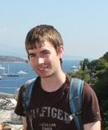

Noel Conlisk

From: Roscommon, Republic of Ireland
Qualifications:
BEng (Honours) - Mechanical
Engineering (1st Class Honours) with specialisation
in Biomedical Engineering. Galway-Mayo Institute of Technology, 2008
BEng (Ordinary) - Mechanical
Engineering (Distinction). Galway-Mayo Institute of Technology, 2007
HC - Mechanical
Engineering (Distinction). Galway-Mayo Institute of Technology, 2006
Postgraduate study: Started October 2008
Project:
'The
Mechanical Environment and Stability of the Distal Femur Pre and Post Total Knee Arthroplasty'
The number of total knee arthroplasty (TKA) performed each year
continues to increase across the world, with Scotland seeing 6,581 knee replacements in total last year, 6.40% of which were
revisions. Studies have shown that TKA is, in general, a successful operation, however a number of studies also show the
potential for failures or complications arising post- implantation.This study aims to examine the mechanical environment
and stability of the knee joint with focus on the distal femur using both experimental and computational methods,
with the design of femoral components receiving considerable attention.
Supervisors: Dr. Pankaj and Mr. Howie
Research Interests:
Finite Element modelling
Experimental work
Implant design
Micromotion
Awards and Other Interests:
RAEng Travel Grant to Attend CMBBE 2010
Student member of the Institute of Engineers Ireland
Student member of the European Society of Biomechanics
Student member of the International Society of Biomechanics
Previous Projects:
'Design of a rig capable of dislodging large
diameter stents used in the treatment of abdominal aortic aneurysms both statically and dynamically'-(BEng honours project GMIT 2008)
Contact: n.conlisk(at)ed.ac.uk